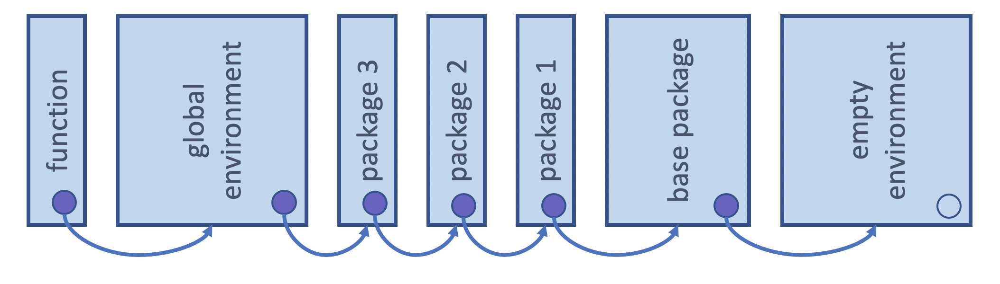
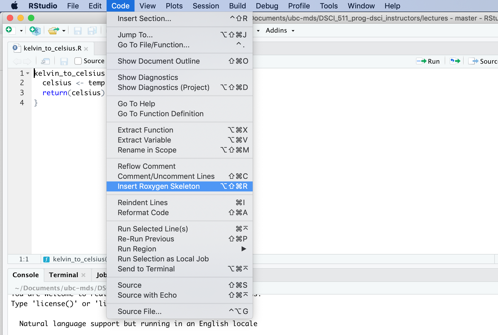

add_two_numbers <- function(x, y) {
x + y
}
add_two_numbers(1, 4)[1] 5In this course, we will get to practice writing functions (and then testing them) in the R programming language. Given this has not been covered in the course pre-requisites, we will cover it here briefly. To learn more about functions in R, we refer you to the functions chapter in the Advanced R book.
variable <- function(…arguments…) { …body… } to create a function and give it a nameExample:
add_two_numbers <- function(x, y) {
x + y
}
add_two_numbers(1, 4)[1] 5return (as shown below).math_two_numbers <- function(x, y, operation) {
if (operation == "add") {
return(x + y)
}
x - y
}math_two_numbers (1, 4, "add")[1] 5math_two_numbers (1, 4, "subtract")[1] -3Default values can be specified in the function definition:
math_two_numbers <- function(x, y, operation = "add") {
if (operation == "add") {
return(x + y)
}
x - y
}math_two_numbers (1, 4)[1] 5math_two_numbers (1, 4, "subtract")[1] -3...If we want our function to be able to take extra arguments that we don’t specify, we must explicitly convert ... to a list (otherwise ... will just return the first object passed to ...):
add <- function(x, y, ...) {
print(list(...))
}
add(1, 3, 5, 6)[[1]]
[1] 5
[[2]]
[1] 6R’s lexical scoping follows several rules, we will cover the following 3:
Object names which are defined inside a function mask object names defined outside of that function. For example, below x is first defined in the global environment, and then also defined in the function environment. x in the function environment masks x in the global environment, so the value of 5 is used in to_add + x instead of 10:
x <- 10
add_to_x <- function(to_add) {
x <- 5
to_add + x
}
add_to_x(2)[1] 7If a function refers to an object name that is not defined inside the function, then R looks at the environment one level above. And if it is not found there, it again, looks another level above. This will happen all the way up the environment tree until it searches all possible environments for that session (including the global environment and loaded packages).

Attribution: Derived from Advanced R by Hadley Wickham
Here x is not defined in the function environment, and so R then looks one-level up to the global environment to try to find x. In this case it does and it is then used to calculate to_add + x:
x <- 10
add_to_x <- function(to_add) {
to_add + x
}
add_to_x(2)[1] 12R does not look up the values for objects it references when it is defined/created, instead it does this when the function is called. This can lead to the function returning different things depending on the values of the objects it references outside of the function’s environment.
For example, each time the function add_to_x is run, R looks up the current value of x and uses that to compute to_add + x:
add_to_x <- function(to_add) {
to_add + x
}
x <- 10
add_to_x(2)[1] 12x <- 20
add_to_x(2)[1] 22Functions in R have no memory of what happened the last time they were called. This happens because a new function environment is created, R created a new environment in which to execute it.
For example, even though we update the value of x inside the function by adding two to it every time we execute it, it returns the same value each time, because R creates a new function environment each time we run it and that environment has no recollection of what happened the last time the function was run:
x <- 10
add_to_x <- function(to_add) {
x <- to_add + x
x
}
add_to_x(2)[1] 12add_to_x(2)[1] 12add_to_x(2)[1] 12In R, function arguments are lazily evaluated: they’re only evaluated if accessed.
Knowing that, now consider the add_one function written in both R and Python below:
# R code (this would work)
add_one <- function(x, y) {
x <- x + 1
return(x)
}# Python code (this would not work)
def add_one(x, y):
x = x + 1
return xWhy will the above add_one function will work in R, but the equivalent version of the function in python would break?
y is, it will break even though it is not used in the function.y is never referenced inside the function, R doesn’t complain, or even notice it.add_one in Radd_one <- function(x, y) {
x <- x + 1
return(x)
}This works:
add_one(2, 1)3and so does this:
add_one(2)3add_one in Pythondef add_one(x, y):
x = x + 1
return x`This works:
add_one(2, 1)3This does not:
add_one(2)---------------------------------------------------------------------------
TypeError Traceback (most recent call last)
<ipython-input-5-f2e542671748> in <module>
----> 1 add_one(2)
TypeError: add_one() missing 1 required positional argument: 'y'Let’s you have easy to use interactive code like this:
dplyr::select(mtcars, mpg, cyl, hp, qsec) mpg cyl hp qsec
Mazda RX4 21.0 6 110 16.46
Mazda RX4 Wag 21.0 6 110 17.02
Datsun 710 22.8 4 93 18.61
Hornet 4 Drive 21.4 6 110 19.44
Hornet Sportabout 18.7 8 175 17.02
Valiant 18.1 6 105 20.22
Duster 360 14.3 8 245 15.84
Merc 240D 24.4 4 62 20.00
Merc 230 22.8 4 95 22.90
Merc 280 19.2 6 123 18.30
Merc 280C 17.8 6 123 18.90
Merc 450SE 16.4 8 180 17.40
Merc 450SL 17.3 8 180 17.60
Merc 450SLC 15.2 8 180 18.00
Cadillac Fleetwood 10.4 8 205 17.98
Lincoln Continental 10.4 8 215 17.82
Chrysler Imperial 14.7 8 230 17.42
Fiat 128 32.4 4 66 19.47
Honda Civic 30.4 4 52 18.52
Toyota Corolla 33.9 4 65 19.90
Toyota Corona 21.5 4 97 20.01
Dodge Challenger 15.5 8 150 16.87
AMC Javelin 15.2 8 150 17.30
Camaro Z28 13.3 8 245 15.41
Pontiac Firebird 19.2 8 175 17.05
Fiat X1-9 27.3 4 66 18.90
Porsche 914-2 26.0 4 91 16.70
Lotus Europa 30.4 4 113 16.90
Ford Pantera L 15.8 8 264 14.50
Ferrari Dino 19.7 6 175 15.50
Maserati Bora 15.0 8 335 14.60
Volvo 142E 21.4 4 109 18.60Notes: - There’s more than just lazy evaluation happening in the code above, but lazy evaluation is part of it. - package::function() is a way to use a function from an R package without loading the entire library.
Sometimes our code is correct but we still encounter errors. This commonly occurs with functions when users attempt to use them in weird and creative ways that the developer did not intend. Developers are well advised to try to anticipate some of this user behaviour and guard against this in a way that can be of help to the user. One way to do this is to have a function fail intentionally when incorrect user input is given.
Imagine we have a simple function to convert temperatures from Fahrenheit to Celsius:
fahr_to_celsius <- function(temp) {
(temp - 32) * 5/9
}What if our user anticipates that our function can handle numbers written as strings? When this happens our users gets a somewhat cryptic error message (which is inversely correlated with their knowledge of the R programming language):
fahr_to_celsius("thirty")Error in temp - 32: non-numeric argument to binary operator
Traceback:
1. fahr_to_celsius("thirty")This error message is not as helpful as it could be! Also, if this calculation happened to take a long time, it might be nicer to check the data type before we attempt the calculation and then if the wrong data type was given, throw an purposeful error with a more helpful error message. One way we can do this simply in R is using a conditional (i.e., if statement) to test the type and then calling stop with a useful error message if the type is incorrect.
For example with the fahr_to_celsius function, we can use if(!is.numeric(temp)) to check whether temp is not numeric. And then if it is not, stop causes a break and the printing out of the more helpful error message “fahr_to_celsius expects a vector of numeric values
fahr_to_celsius <- function(temp) {
if(!is.numeric(temp)) {
stop("`fahr_to_celsius` expects a vector of numeric values")
}
(temp - 32) * 5/9
}fahr_to_celsius("thirty")Error in fahr_to_celsius("thirty"): `fahr_to_celsius` expects a vector of numeric values
Traceback:
1. fahr_to_celsius("thirty")
2. stop("`fahr_to_celsius` expects a vector of numeric values") # at line 3 of file <text>If you wanted to issue a warning instead of an error, you could use warning in place of stop in the example above. However, in most cases it is better practice to throw an error than to print a warning…
More advanced exception handling exists in R, and I invite interested learner to read more about it here in the Condition Handling and Defensive Programming sections of Advanced R.
tidyverse functionsThe functions from the tidyverse are beautiful to use interactively - with these functions, we can “pretend” that the data frame column names are objects in the global environment and refer to them without quotations (e.g., "")
library(tidyverse)Error in library(tidyverse): there is no package called 'tidyverse'library(gapminder)Error in library(gapminder): there is no package called 'gapminder'gapminder |>
filter(country == "Canada", year == 1952)Error: object 'year' not foundexpecially when compared with base R:
gapminder[gapminder$country == "Canada" & gapminder$year == 1952, ]Error: object 'gapminder' not foundHowever, the beauty of being able to refer to data frame column names in R without quotations, leads to problems when we try to use them in a function. For example,
filter_gap <- function(col, val) {
filter(gapminder, col == val)
}
filter_gap(country, "Canada")Error: object 'country' not found
Traceback:
1. filter_gap(country, "Canada")
2. filter(gapminder, col == val) # at line 4 of file <text>
3. filter.tbl_df(gapminder, col == val)
4. filter_impl(.data, quo)
Why does filter work with non-quoted variable names, but our function filter_gap fail? At a very high-level, this is because filter is doing more behind the scenes to handle these unquoted column names than we see without looking at the source code. So to make this work for our function, we need to do a little more work too.
Given that this is not a course in R programming, we will not go into the details of why this happens, but we will show one way of how to handle this. For learners intersted to learn more about why this happens, we recommend reading these two resources:
tidyverse functions by embracing column names: { }In the newest release of the rlang R package, there has been the introduction of the {{ (pronounced “curly curly”) operator. This operator does the necessary work behind the scenes so that you can continue to use unquoted column names with the tidyverse functions even when you use them in functions that you write yourself.
To use the {{ operator, we “embrace” the unquoted column names when we refer to them inside our function body. An important note is that there are several ways to implement the usage of unquoted column names in R, and the {{ operator only works with the tidyverse functions. Please refer to the Metaprogramming chapter of Advanced R if you need to do this with non-tidyverse functions.
Here’s the function we show above working when we use the {{ operator to “embrace” the unquoted column names:
filter_gap <- function(col, val) {
filter(gapminder, {{col}} == val)
}filter_gap(country, "Canada")Error in filter_gap(country, "Canada"): object 'gapminder' not found:= is needed when assigning valuesFor similar reasons, the walrus operator (:=) is needed when writing functions that create new columns using unquoted column names with the tidyverse functions:
group_summary <- function(data, group, col, fun) {
data |>
group_by({{ group }}) |>
summarise( {{ col }} := fun({{ col }}))
}group_summary(gapminder, continent, gdpPercap, mean)Error in summarise(group_by(data, {: could not find function "summarise"Function documentation is extremely useful at both the time of function creation/development, as well as at the time of function usage by the user. At the time of creation/development, it is useful for clearly delineating and communication the planned function’s specifications. At the time of usage, it is often the primary documentation a user will refer to in order to understand how to use the function. If a function is not well documented, it will not be well understood or widely used.
In R, we write function documentation in a style that the roxygen2 R package can use to automatically generate nicely formatted documentation, accessible via R’s help function, when we create R packages. This is not available to us until we package our functions in software packages, however it is a good practice to get into because it helps ensure you document the key aspects of a function for your user, and it means that when you go to create an R package to share your function, you will have already correctly formatted the function documentation - saving future you some work!
#' Converts temperatures from Fahrenheit to Celsius.
#'
#' @param temp a vector of temperatures in Fahrenheit
#'
#' @return a vector of temperatures in Celsius
#'
#' @examples
#' fahr_to_celcius(-20)
fahr_to_celsius <- function(temp) {
(temp - 32) * 5/9
}RStudio has a nice feature to provide a roxygen2 formatted skeleton for function documentation. To use it, you put the cursor in the function definition, and then select the menu items “Code” > “Insert Roxygen Skeleton”:

To practice writing functions in R, you can attempt this worksheet: https://github.com/UBC-DSCI/dsci-310-student/blob/main/practice/worksheet_functions_in_r.ipynb
Note: to access the automated software tests for feedback on your answers, you will want to clone or download this GitHub repo and navigate to the practice directory.
In this course, we will get to practice writing functions (and then testing them) in the Python programming language. We will only cover it here briefly. To learn more about functions in Python, we refer you to the Module 6: Functions Fundamentals and Best Practices from the Programming in Python for Data Science course.
Functions in Python are defined using the reserved word def. A colon follows the function arguments to indicate where the function body should starte. White space, in particular indentation, is used to indicate which code belongs in the function body and which does not. A general form for fucntion definition is shown below:
def function_name(…function arguments…):
…function body…Here’s a working example:
add_two_numbers <- function(x, y) {
x + y
}
add_two_numbers(1, 4)[1] 5return (as shown below).math_two_numbers <- function(x, y, operation) {
if (operation == "add") {
return(x + y)
}
x - y
}math_two_numbers (1, 4, "add")[1] 5math_two_numbers (1, 4, "subtract")[1] -3Default values can be specified in the function definition:
math_two_numbers <- function(x, y, operation = "add") {
if (operation == "add") {
return(x + y)
}
x - y
}math_two_numbers (1, 4)[1] 5math_two_numbers (1, 4, "subtract")[1] -3...If we want our function to be able to take extra arguments that we don’t specify, we must explicitly convert ... to a list (otherwise ... will just return the first object passed to ...):